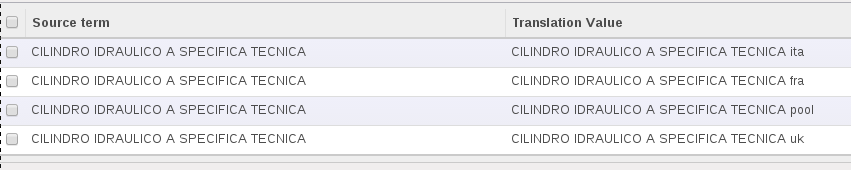

<section class="oe_container oe_dark">
    <div class="oe_row oe_spaced">
        <h2 class="oe_slogan">PLM Product Description Language Helper</h2>
        <h3 class="oe_centeralign">Odoo version covered : 10.0</h3>
        <div class="oe_span12">
            <p class="oe_mt32">
				This module allows you to use translations in product description. Provides also a view to manage plm description translations.
            </p>
            <p class="oe_mt32">
            How it works:
            	<h3 class="oe_centeralign">Standard description use</h3>
            	<br></br>
            	<ul>
					<li>Go to Configuration --> Description. Select a description and click on edit blue button.</li>
					<br></br>
					<li></li>
					<br></br>
					<li>Here you can click on the translation blue button in each translatable field and evaluate correctly translation values.</li>
					<br></br>
					<li></li>
					<br></br>
					<li>Go to Search on Engioneering parts, select a product and select the previous translated description. Description will be copied in description field.</li>
					<br></br>
					<li></li>
					<br></br>
					<li>If you are logged for example with an italian user the description will be shown as follow:</li>
					<br></br>
					<li></li>
					<br></br>
					<li>The following bottom fields that are used for description coputation are also translated:</li>
					<br></br>
					<li></li>
            	</ul>
            </p>
         </div>
    </div>
</section>